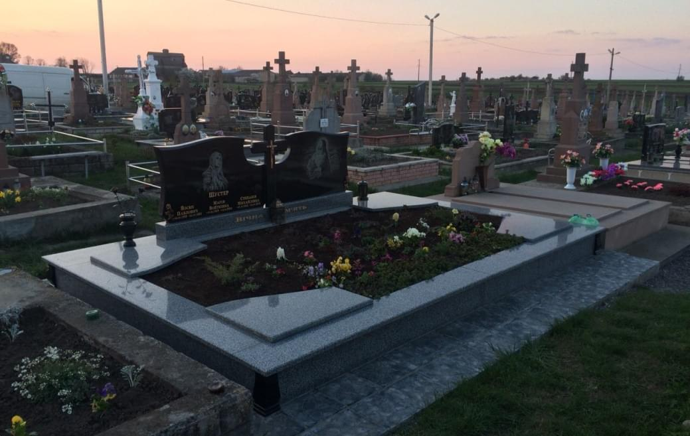

ЯК ЗАМОВИТИ ?
Перше на що потрібно звернути увагу – це кількість людей, для яких буде встановлюватись пам’ятник. Саме від цього буде залежати розміри конструкції
Вибір кольору граніту. Об’єкт може бути як однотонним, так і виготовленим із поєднанням двох кольорів.
Робити могилу відкритою чи закритою, залежить від того, на скільки часто ви збираєтесь відвідувати свої родичів.
Наші консультанти безкоштовно допоможуть вам зробити вдалий і правильний вибір, що дозволить вам зекономити кошти і досягти бажаного результату.
Наша фірма працює виключно під замовлення. Для того щоб отримати консультацію для формування остаточного рішення вам необхідно заповнити поля в кінці сторінки і натиснути кнопку консультація, або зателефонувати напряму по номеру телефону вказаному в шапці сайту.
ЯК ЗАМОВИТИ ?
Перше на що потрібно звернути увагу – це кількість людей, для яких буде встановлюватись пам’ятник. Саме від цього буде залежати розміри конструкції
Вибір кольору граніту. Об’єкт може бути як однотонним, так і виготовленим із поєднанням двох кольорів.
Робити могилу відкритою чи закритою, залежить від того, на скільки часто ви збираєтесь відвідувати свої родичів.
Наші консультанти безкоштовно допоможуть вам зробити вдалий і правильний вибір, що дозволить вам зекономити кошти і досягти бажаного результату.
Наша фірма працює виключно під замовлення. Для того щоб отримати консультацію для формування остаточного рішення вам необхідно заповнити поля в кінці сторінки і натиснути кнопку консультація, або зателефонувати напряму по номеру телефону вказаному в шапці сайту.

ДОГЛЯД
Граніт довговічний і невибагливий, але як і будь-який матеріал з часом вимагає до себе уваги і догляду. Так як камінь є дорогий, засоби для догляду повинні бути професійні, інакше гарантій того, що він не втратить своїх властивостей і благородного вигляду не може бути. Безумовно догляд за таким матеріалом варто довірити досвідченим фахівцям, розуміють властивості матеріалу і знають, які засоби застосувати в тому чи іншому випадку, маючи під рукою усі необхідні засоби.
- Сильнодіючий очищувач, для видалення залишків вапна, цементу, цвілі
- Очисник іржі, що може утворитись, якщо пам’ятник прикрашений металевими елементами
- Захист від бруду, просочивши яким пам’ятник можна захистити його від жиру, бруду і інших забруднюючих граніт речовин
- Полірування із додаванням натуральних або синтетичних восків, для захисту і блиску граніту
Всі ці засоби мають бути найвищої якості і застосовані за інструкцією
ДОГЛЯД
Граніт довговічний і невибагливий, але як і будь-який матеріал з часом вимагає до себе уваги і догляду. Так як камінь є дорогий, засоби для догляду повинні бути професійні, інакше гарантій того, що він не втратить своїх властивостей і благородного вигляду не може бути.
Безумовно догляд за таким матеріалом варто довірити досвідченим фахівцям, розуміють властивості матеріалу і знають, які засоби застосувати в тому чи іншому випадку, маючи під рукою усі необхідні засоби.
- Сильнодіючий очищувач, для видалення залишків вапна, цементу, цвілі
- Очисник іржі, що може утворитись, якщо пам’ятник прикрашений металевими елементами
- Захист від бруду, просочивши яким пам’ятник можна захистити його від жиру, бруду і інших забруднюючих граніт речовин
- Полірування із додаванням натуральних або синтетичних восків, для захисту і блиску граніту
Всі ці засоби мають бути найвищої якості і застосовані за інструкцією